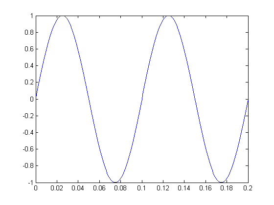
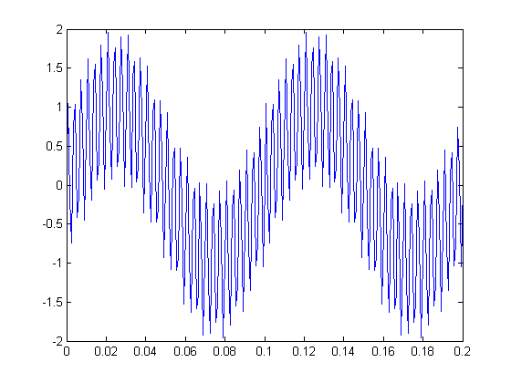
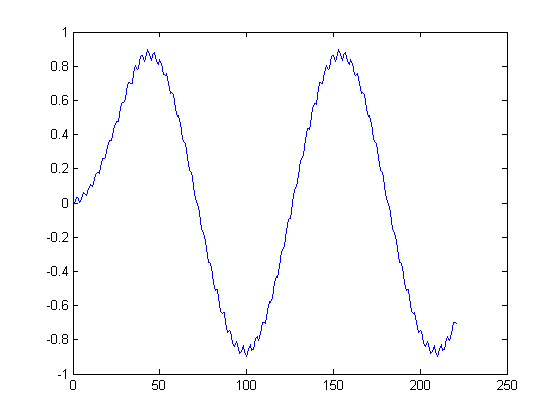

f1=10; f2=300; fs=1100; t=0:1/fs:0.2;
Next we will generate a low frequency signal.
y=sin(2*pi*f1*t)%frequency one
plot(t,y);
y =
Columns 1 through 7
0 0.0571 0.1140 0.1705 0.2265 0.2817 0.3360
Columns 8 through 14
0.3893 0.4412 0.4917 0.5406 0.5878 0.6330 0.6762
Columns 15 through 21
0.7171 0.7557 0.7919 0.8255 0.8563 0.8844 0.9096
Columns 22 through 28
0.9319 0.9511 0.9671 0.9801 0.9898 0.9963 0.9996
Columns 29 through 35
0.9996 0.9963 0.9898 0.9801 0.9671 0.9511 0.9319
Columns 36 through 42
0.9096 0.8844 0.8563 0.8255 0.7919 0.7557 0.7171
Columns 43 through 49
0.6762 0.6330 0.5878 0.5406 0.4917 0.4412 0.3893
Columns 50 through 56
0.3360 0.2817 0.2265 0.1705 0.1140 0.0571 0.0000
Columns 57 through 63
-0.0571 -0.1140 -0.1705 -0.2265 -0.2817 -0.3360 -0.3893
Columns 64 through 70
-0.4412 -0.4917 -0.5406 -0.5878 -0.6330 -0.6762 -0.7171
Columns 71 through 77
-0.7557 -0.7919 -0.8255 -0.8563 -0.8844 -0.9096 -0.9319
Columns 78 through 84
-0.9511 -0.9671 -0.9801 -0.9898 -0.9963 -0.9996 -0.9996
Columns 85 through 91
-0.9963 -0.9898 -0.9801 -0.9671 -0.9511 -0.9319 -0.9096
Columns 92 through 98
-0.8844 -0.8563 -0.8255 -0.7919 -0.7557 -0.7171 -0.6762
Columns 99 through 105
-0.6330 -0.5878 -0.5406 -0.4917 -0.4412 -0.3893 -0.3360
Columns 106 through 112
-0.2817 -0.2265 -0.1705 -0.1140 -0.0571 -0.0000 0.0571
Columns 113 through 119
0.1140 0.1705 0.2265 0.2817 0.3360 0.3893 0.4412
Columns 120 through 126
0.4917 0.5406 0.5878 0.6330 0.6762 0.7171 0.7557
Columns 127 through 133
0.7919 0.8255 0.8563 0.8844 0.9096 0.9319 0.9511
Columns 134 through 140
0.9671 0.9801 0.9898 0.9963 0.9996 0.9996 0.9963
Columns 141 through 147
0.9898 0.9801 0.9671 0.9511 0.9319 0.9096 0.8844
Columns 148 through 154
0.8563 0.8255 0.7919 0.7557 0.7171 0.6762 0.6330
Columns 155 through 161
0.5878 0.5406 0.4917 0.4412 0.3893 0.3360 0.2817
Columns 162 through 168
0.2265 0.1705 0.1140 0.0571 -0.0000 -0.0571 -0.1140
Columns 169 through 175
-0.1705 -0.2265 -0.2817 -0.3360 -0.3893 -0.4412 -0.4917
Columns 176 through 182
-0.5406 -0.5878 -0.6330 -0.6762 -0.7171 -0.7557 -0.7919
Columns 183 through 189
-0.8255 -0.8563 -0.8844 -0.9096 -0.9319 -0.9511 -0.9671
Columns 190 through 196
-0.9801 -0.9898 -0.9963 -0.9996 -0.9996 -0.9963 -0.9898
Columns 197 through 203
-0.9801 -0.9671 -0.9511 -0.9319 -0.9096 -0.8844 -0.8563
Columns 204 through 210
-0.8255 -0.7919 -0.7557 -0.7171 -0.6762 -0.6330 -0.5878
Columns 211 through 217
-0.5406 -0.4917 -0.4412 -0.3893 -0.3360 -0.2817 -0.2265
Columns 218 through 221
-0.1705 -0.1140 -0.0571 -0.0000
 y=y+sin(2*pi*f2*t)%frequency two
plot(t,y);
y =
Columns 1 through 7
0 1.0469 -0.1677 -0.7391 0.7671 1.0375 -0.4197
Columns 8 through 14
-0.1514 1.3509 0.7735 -0.4492 0.5878 1.6228 0.3944
Columns 15 through 21
-0.1925 1.2964 1.5477 0.0697 0.3157 1.7941 1.1914
Columns 22 through 28
-0.0580 0.9511 1.9570 0.6984 0.0802 1.5370 1.7553
Columns 29 through 35
0.2438 0.4557 1.8995 1.2618 -0.0227 0.9511 1.9217
Columns 36 through 42
0.6279 -0.0252 1.3970 1.5812 0.0362 0.2151 1.6268
Columns 43 through 49
0.9579 -0.3568 0.5878 1.5305 0.2100 -0.4684 0.9299
Columns 50 through 56
1.0918 -0.4740 -0.3141 1.0802 0.3957 -0.9327 0.0000
Columns 57 through 63
0.9327 -0.3957 -1.0802 0.3141 0.4740 -1.0918 -0.9299
Columns 64 through 70
0.4684 -0.2100 -1.5305 -0.5878 0.3568 -0.9579 -1.6268
Columns 71 through 77
-0.2151 -0.0362 -1.5812 -1.3970 0.0252 -0.6279 -1.9217
Columns 78 through 84
-0.9511 0.0227 -1.2618 -1.8995 -0.4557 -0.2438 -1.7553
Columns 85 through 91
-1.5370 -0.0802 -0.6984 -1.9570 -0.9511 0.0580 -1.1914
Columns 92 through 98
-1.7941 -0.3157 -0.0697 -1.5477 -1.2964 0.1925 -0.3944
Columns 99 through 105
-1.6228 -0.5878 0.4492 -0.7735 -1.3509 0.1514 0.4197
Columns 106 through 112
-1.0375 -0.7671 0.7391 0.1677 -1.0469 0.0000 1.0469
Columns 113 through 119
-0.1677 -0.7391 0.7671 1.0375 -0.4197 -0.1514 1.3509
Columns 120 through 126
0.7735 -0.4492 0.5878 1.6228 0.3944 -0.1925 1.2964
Columns 127 through 133
1.5477 0.0697 0.3157 1.7941 1.1914 -0.0580 0.9511
Columns 134 through 140
1.9570 0.6984 0.0802 1.5370 1.7553 0.2438 0.4557
Columns 141 through 147
1.8995 1.2618 -0.0227 0.9511 1.9217 0.6279 -0.0252
Columns 148 through 154
1.3970 1.5812 0.0362 0.2151 1.6268 0.9579 -0.3568
Columns 155 through 161
0.5878 1.5305 0.2100 -0.4684 0.9299 1.0918 -0.4740
Columns 162 through 168
-0.3141 1.0802 0.3957 -0.9327 0.0000 0.9327 -0.3957
Columns 169 through 175
-1.0802 0.3141 0.4740 -1.0918 -0.9299 0.4684 -0.2100
Columns 176 through 182
-1.5305 -0.5878 0.3568 -0.9579 -1.6268 -0.2151 -0.0362
Columns 183 through 189
-1.5812 -1.3970 0.0252 -0.6279 -1.9217 -0.9511 0.0227
Columns 190 through 196
-1.2618 -1.8995 -0.4557 -0.2438 -1.7553 -1.5370 -0.0802
Columns 197 through 203
-0.6984 -1.9570 -0.9511 0.0580 -1.1914 -1.7941 -0.3157
Columns 204 through 210
-0.0697 -1.5477 -1.2964 0.1925 -0.3944 -1.6228 -0.5878
Columns 211 through 217
0.4492 -0.7735 -1.3509 0.1514 0.4197 -1.0375 -0.7671
Columns 218 through 221
0.7391 0.1677 -1.0469 0.0000
 b=ones(1,32)/32; yy=filter(b,1,y);
plot(yy) % Plot result
